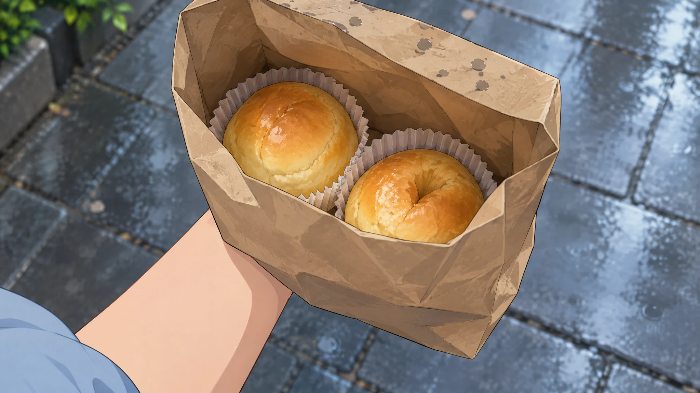
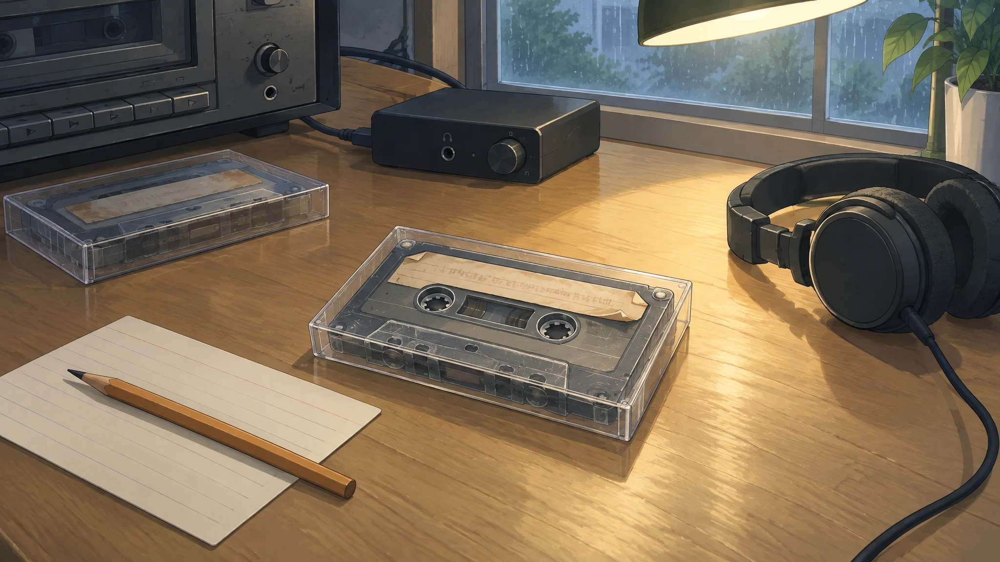
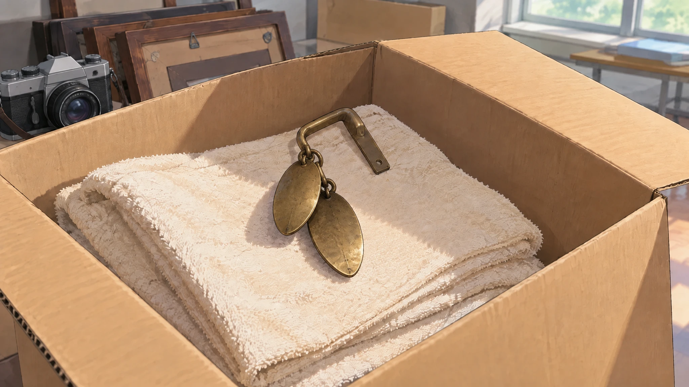
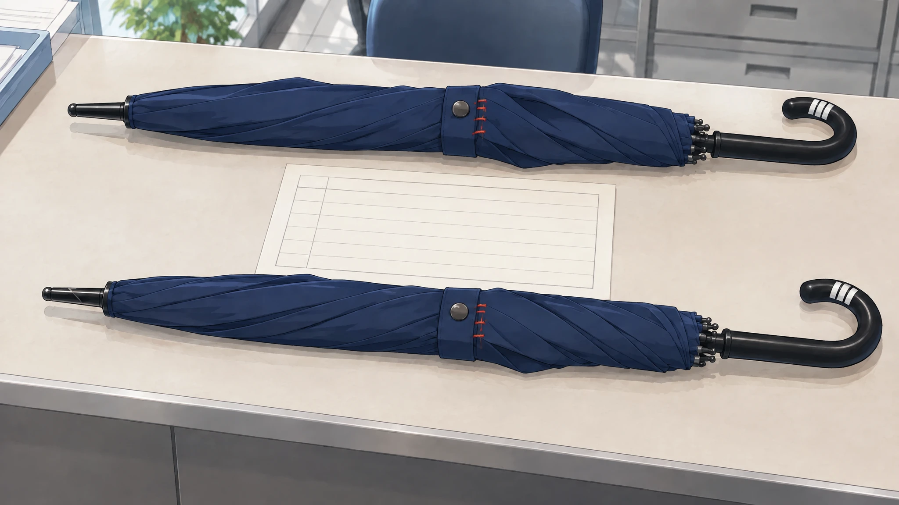
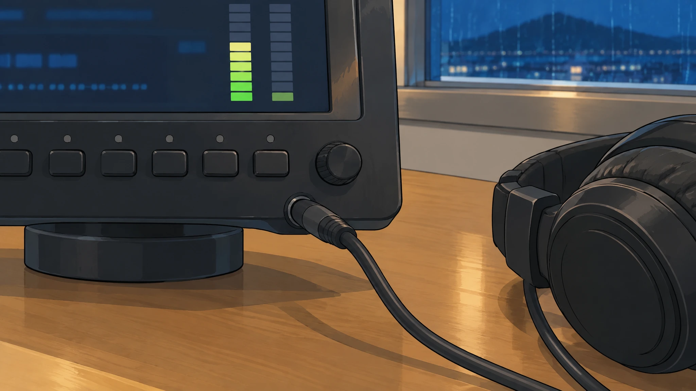
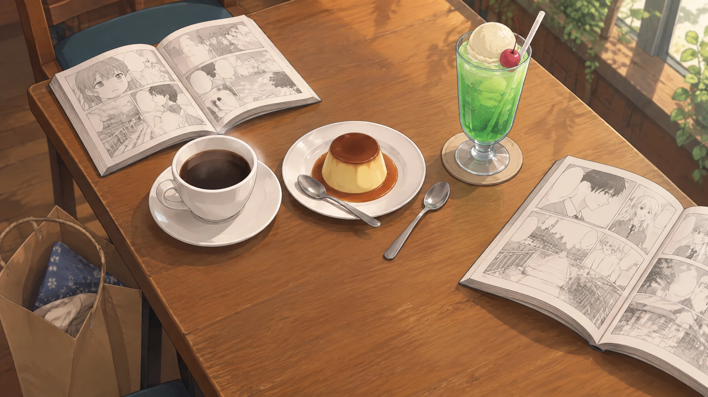
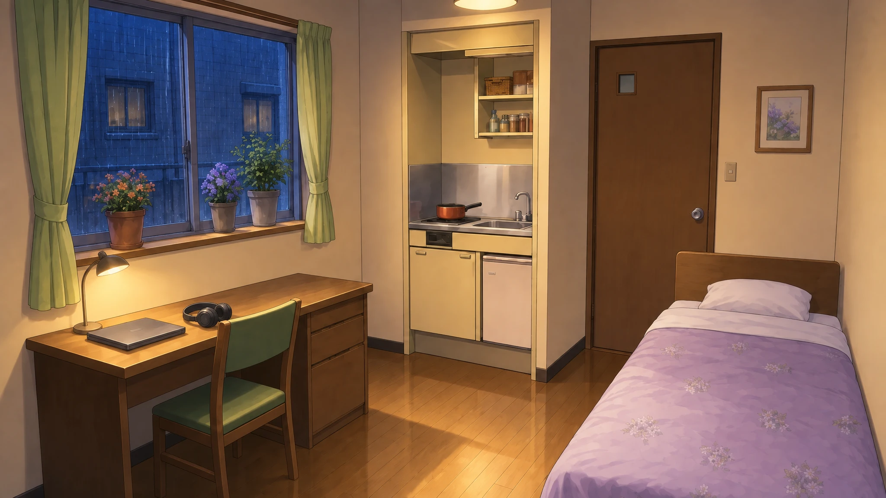
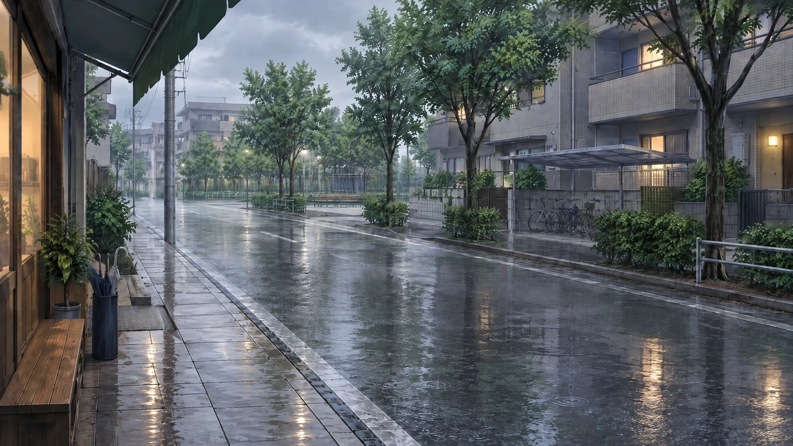
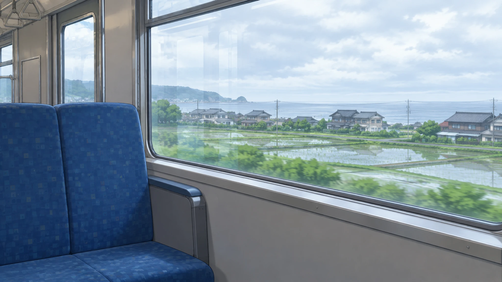
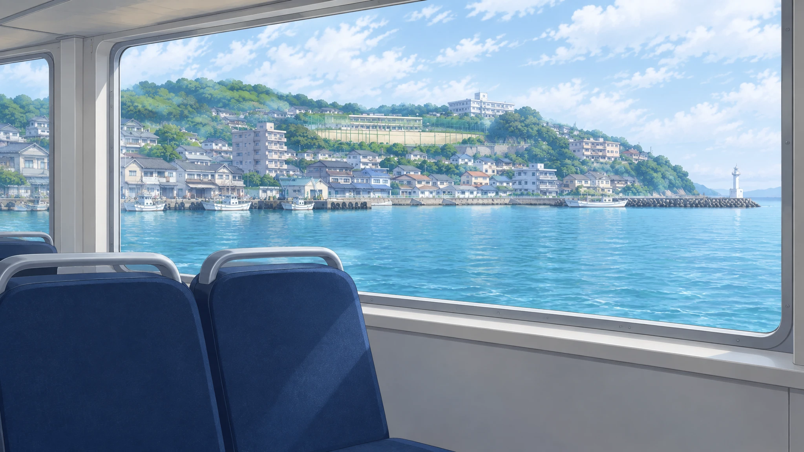

叙事画面补充 · 14张交付图
8张特写，6张空间背景。Replicate · gpt-image-2.5-flare · medium · 2048×1152。
原图展示；正文中的准确出入点与人物演出见 修订说明。

接站：凛臂弯里的纸袋与被压瘪的奶油面包
rain-paper-bag
序章：旧磁带、转录机和待确认的空标签
archive-tape-splice
第一章：从六号箱里找到、卸下门框的旧铜铃
photo-studio-bell
第三章：并排比对两把蓝伞，红线在伞带、白胶带在手柄
two-blue-umbrellas
序章异常与第四章回放：返回通道表头和有线耳机
return-line-closeup第六章：饮料放稳后，凛与Mara握住仍带水珠的手
nineteen-twelve-hands第七章：游船上看见的完整青叶海岸线，补上黑屏段
aoba-from-the-boat
第七章：两本漫画、两只勺子和共享布丁的桌面
cafe-shared-table
凛在青叶的住处：夜间申请、消息与独处
rin-room-night海岸台雨夜门外：警告后离开与归途
radio-exterior-night
东京课程后的街道、雨中通话
tokyo-neighborhood-rain
提前交接结局：返程列车上的消息
train-window-day
游船舱内与侧窗：从登船到开放观景平台
tour-boat-cabin二十四日补休日买旅行装洗发水：日用品货架
drugstore-day